A simple guide for trainees. From your first login to your portfolio. Read it once, then keep it open while you work.
Ye guide simple English me hai. Har step ke neeche Hindi me chhota sa matlab bhi hai.
Website: https://devops-lab.mohityeotikar.workers.dev
Lab repo (for incident drills): https://github.com/mohit-yeotikar/devops-lab
Ubuntu laptop, Docker, free AWS account aur GitHub account chahiye. Roz 2-4 ghante, hafte me 5 din.
Open the website and click Start free. Fill the form:
- only. This becomes your portfolio link, for example /u/harshada-kharade.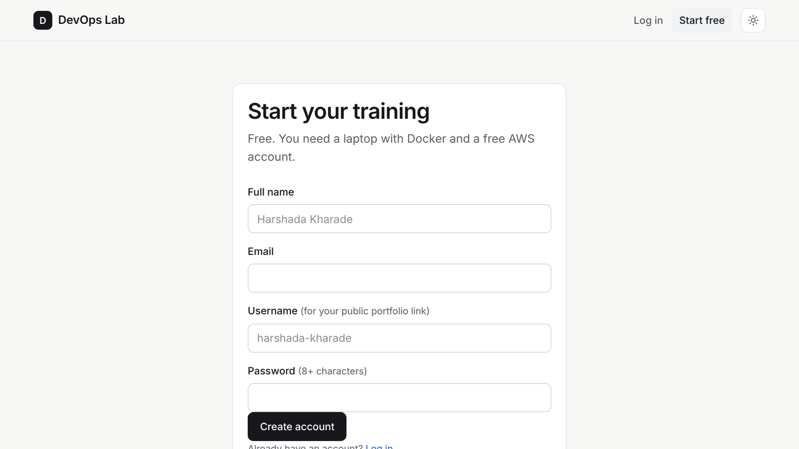
The sign-up page. Click "Create account" when done.
Apna asli naam likho, jo documents pe hai. Username chhote letters me. Password 8+ characters.
Next time, click Log in, enter your email and password. You stay logged in on that browser for 30 days.
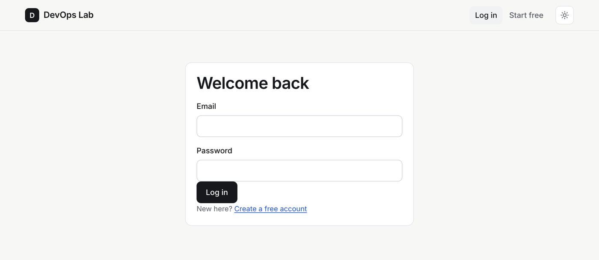
Dobara aane pe Log in pe click karo. Email aur password daalo.
After login you see your home page. The four boxes at the top are your record:
Below that: Continue working (your open ticket), Next ticket, Today's plan and all 12 sprints.
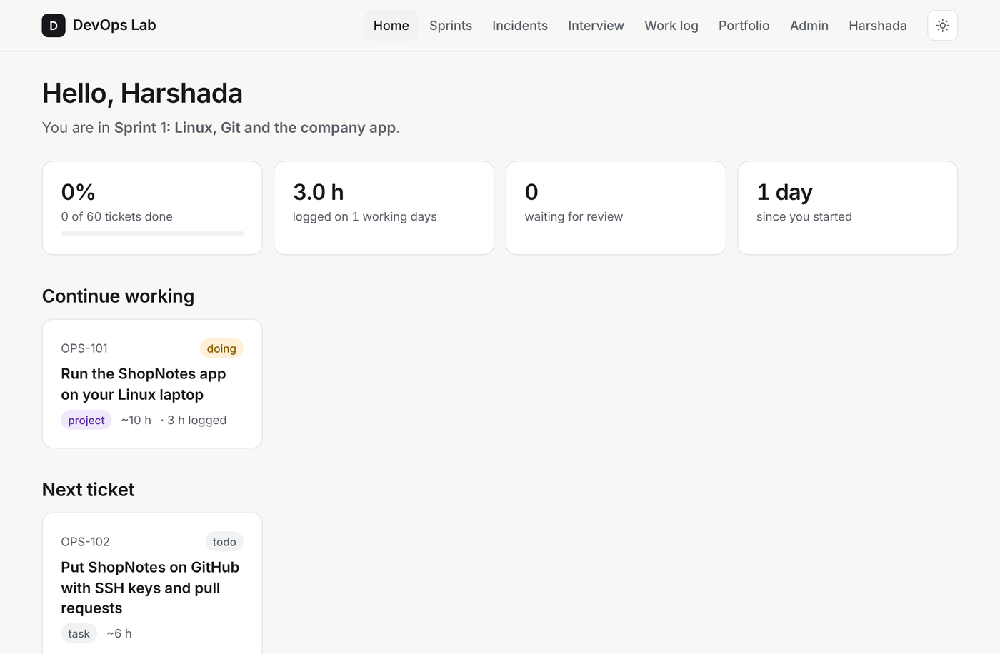
Home. Click any card to open it.
Home page pe tumhara progress dikhta hai. "Continue working" wala ticket roz kholo.
Click Sprints in the top menu, then Sprint 1. A sprint is 2 weeks of work with 5 tickets. Read "What you do in this sprint" first. Do the tickets in order: OPS-101, then OPS-102, and so on. Each ticket builds on the one before.
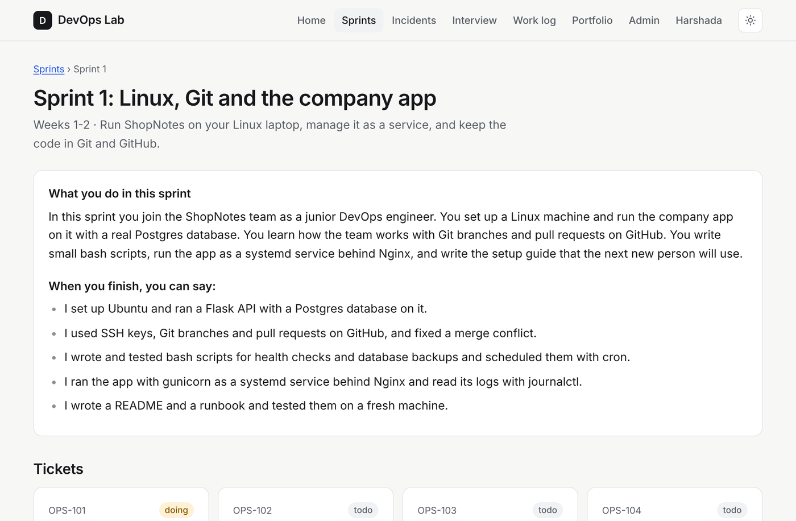
Ek sprint = 2 hafte, 5 tickets. Tickets order me karo, pehla pehle.
A ticket looks like a message from your team lead at a real company. Read the Goal and the message. Then click Start this ticket. The status changes to doing, and your start date is saved.
The ticket page has five tabs: Ticket, Explain it, Interview, Proof & hours and Ask coach. You will use all five.
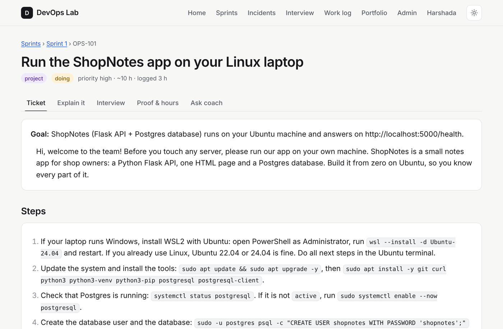
Ticket OPS-101 with its goal, the message from the team lead, and the five tabs.
Ticket kholo, Goal padho, "Start this ticket" dabao. Upar 5 tabs hain, sab use karne hain.
In the Ticket tab, follow the Steps one by one on your laptop. Type each command yourself. Do not copy-paste a whole block without reading it. If a command fails, read the error, then try again.
Under Done means is a checklist. Tick a line only when it is really true on your machine. It saves itself.
Stuck? Open Stuck? Open the hints, or use the Ask coach tab (step 11). Under Words to know are the technical words of this ticket with a Hindi line.
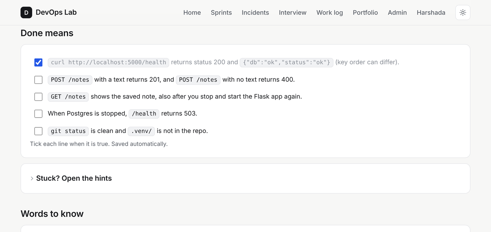
Tick each "Done means" line when it is true. It is saved automatically.
Steps laptop pe karo, commands khud type karo. "Done means" me tick tab karo jab sach me ho gaya ho.
This is the most important tab for your interviews. First read How an engineer says it: a short model text in simple English, with the same idea in Hindi below.
Then write your own 5 to 7 sentences in the box. Start with "In this task I ...". Use past tense: "I installed", "I created", "I tested". Mistakes are fine. Click Check my explanation.
The coach gives you: a score out of 10, your text with the English corrected, what was missing, and a short script you can say in an interview. Read the script aloud 3 times. Then write again if the score is under 7.
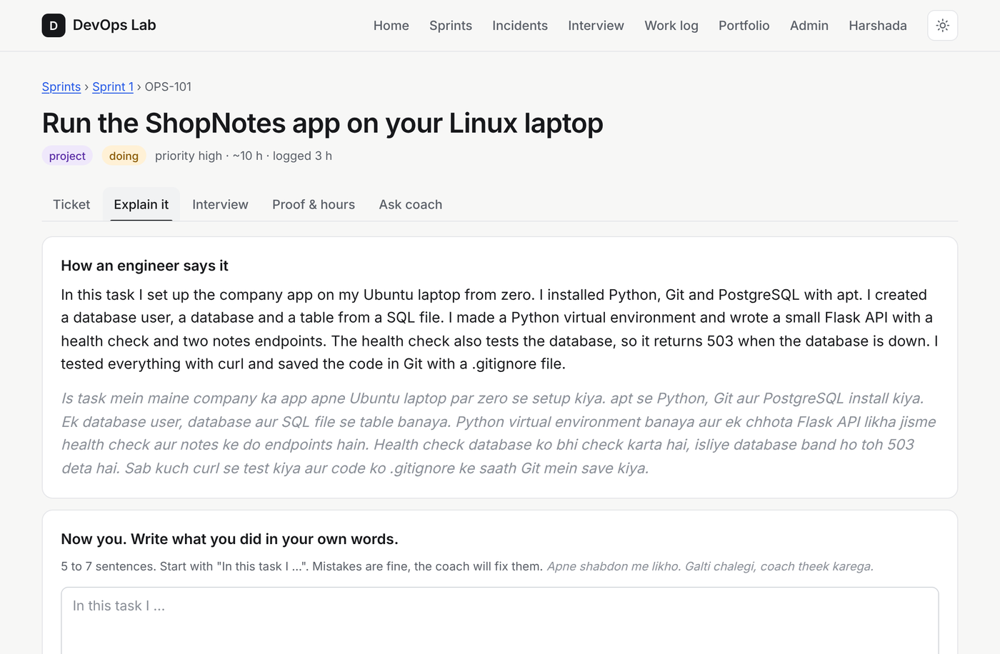
Explain it: read the model text, then write your own words below.
Apne shabdon me 5-7 line likho, "In this task I ..." se shuru karo. Coach English theek karega, score dega aur bolne ka script dega. Script 3 baar zor se padho.
Three questions an interviewer asks about this kind of work, each with a model answer. Open a question, read the answer, close it, and say it yourself without looking. Do this for every ticket. At the bottom is a button to start a mock interview on this sprint.
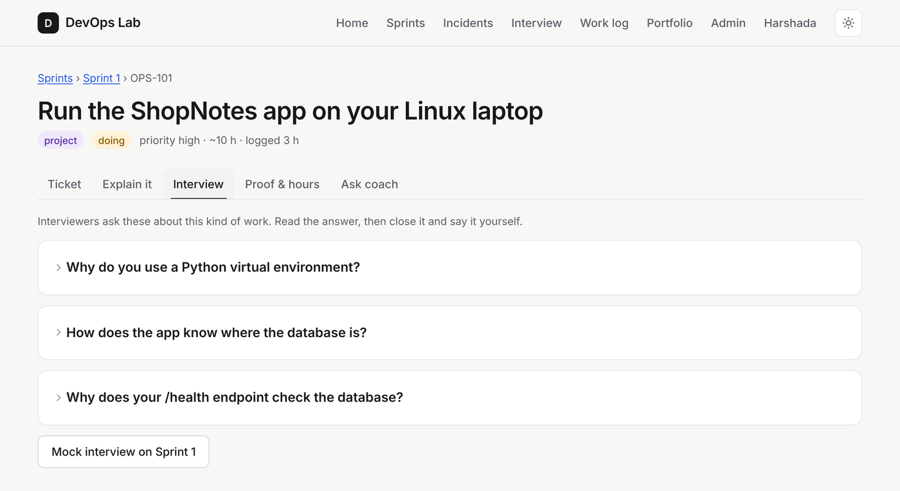
Har ticket ke 3 interview sawaal hain. Jawab padho, band karo, phir khud bolo.
Every time you stop working, open Proof & hours and log the hours: how many hours, which day, and one short line about what you did. Click Add. Be honest. Your hours are compared with your Git activity before the experience letter is written.
When all "Done means" lines are true, submit your proof:
Click Submit for review. The status becomes in review. You can start the next ticket while you wait. The reviewer will approve it or ask for changes with a note. If changes are asked, fix them and submit again.
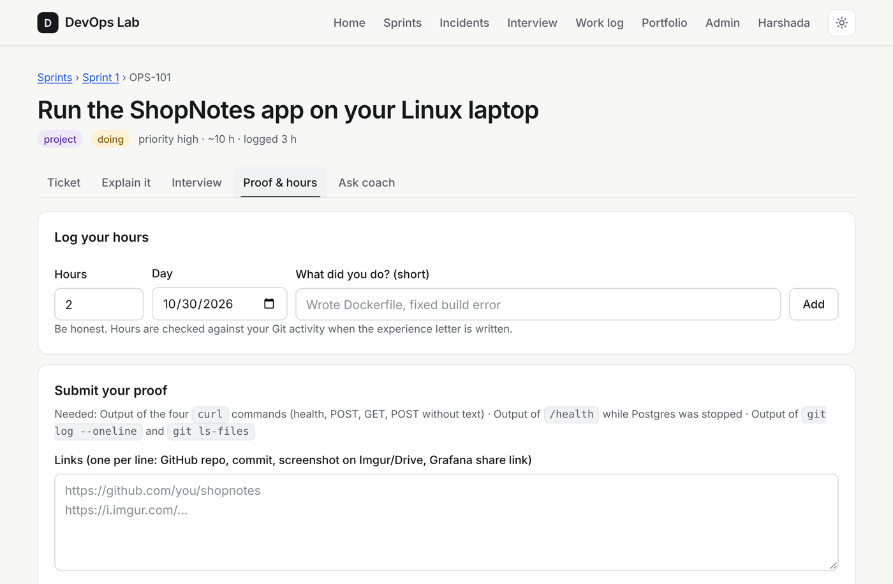
Log hours at the top. Submit links and notes at the bottom.
Kaam band karte hi hours likho. Jab sab "Done means" sach ho, GitHub link, screenshot link aur notes daal ke "Submit for review" dabao. Reviewer approve karega ya changes maangega.
The Ask coach tab is a chat. The coach knows this ticket. Write in simple English what you tried and what you see. Example: "I ran docker compose up. The app container exits at once. What should I check?" The coach answers simply and will not do the work for you. Also use it to ask the meaning of a word.
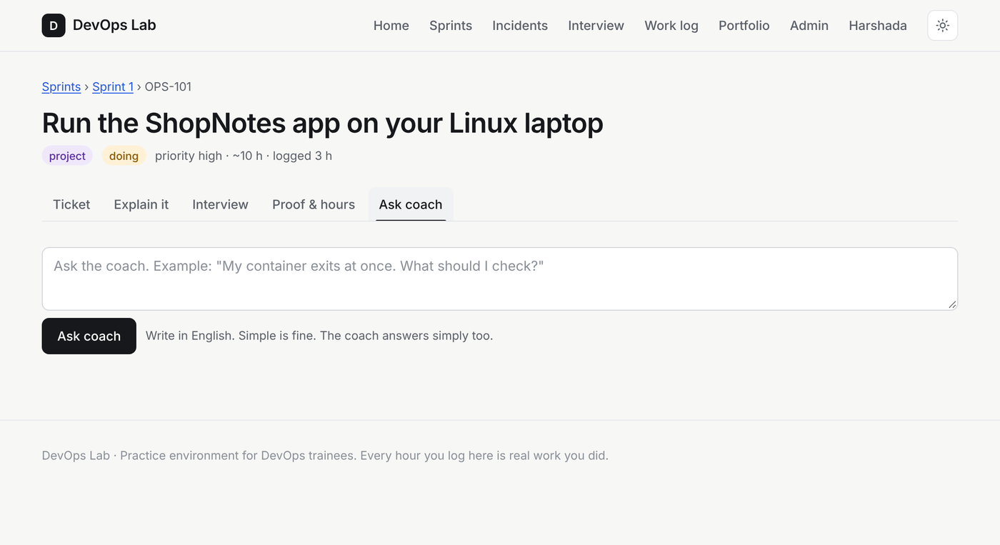
Atak gaye? Coach ko English me likho: kya kiya, kya dikh raha hai. Coach simple English me samjhayega.
Click Incidents in the top menu. A drill is a broken system that runs on your laptop with Docker. Users are "angry". You must find the cause and fix it, like an on-call engineer. There are 8 drills.
git clone https://github.com/mohit-yeotikar/devops-lab.gitcd devops-lab/drills/<name> then docker compose up -ddocker compose ps, docker compose logs, curl, look at the config files.docker compose down -v.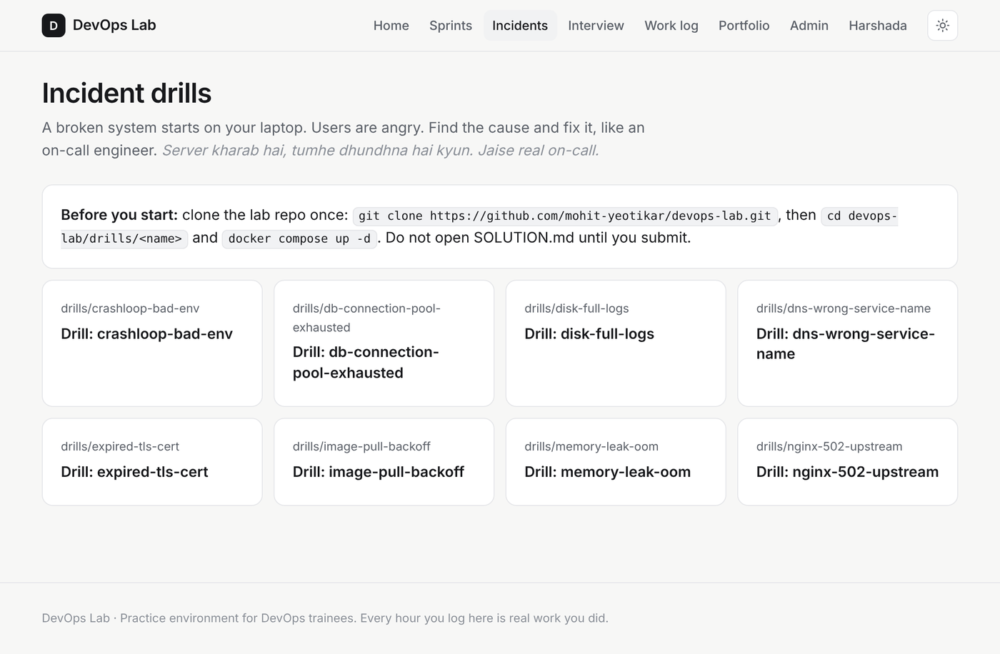
Hafte me ek drill. Laptop pe Docker se kharab system chalao, wajah dhundho, website pe root cause likho. SOLUTION.md submit se pehle mat kholo.
Click Interview. Choose Everything I have worked on or one sprint, then Start interview. You get 7 questions, one at a time. Write your answer the way you would speak it: first person, short sentences, the tool name, the problem, what you did, the result.
After each answer you get a score, feedback and a better answer. At the end you get an average. Under 7? Read every "better answer" aloud and redo the interview in two days. Your last three scores show on your portfolio.
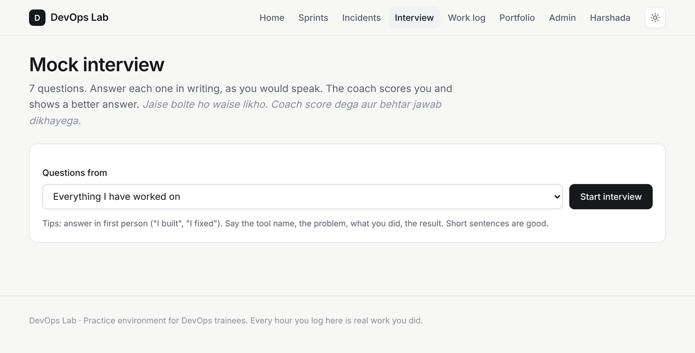
Hafte me ek mock interview, 7 sawaal. Jaise bolte ho waise likho. 7 se kam score? "Better answer" zor se padho, 2 din baad dobara do.
Click Work log to see every hour you logged: total, working days, hours per week, and the full list. The reviewer and the experience letter use this list. It should grow every working day.
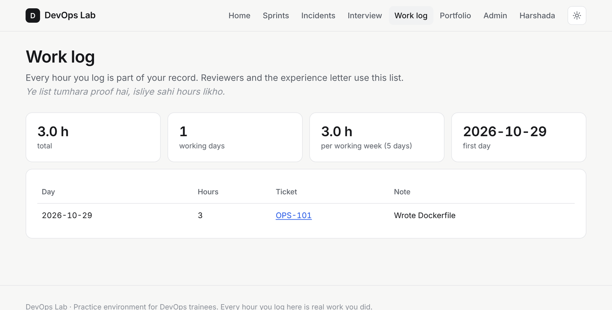
Work log tumhara proof hai. Ye roz badhna chahiye.
Click Portfolio. This is your public page: https://devops-lab.mohityeotikar.workers.dev/u/<your-username>. It shows your hours, approved tickets, finished sprints, solved incidents, your projects with your own explanation and repo links, and the skills you demonstrated. Only approved work appears here. Put this link on your resume and LinkedIn.
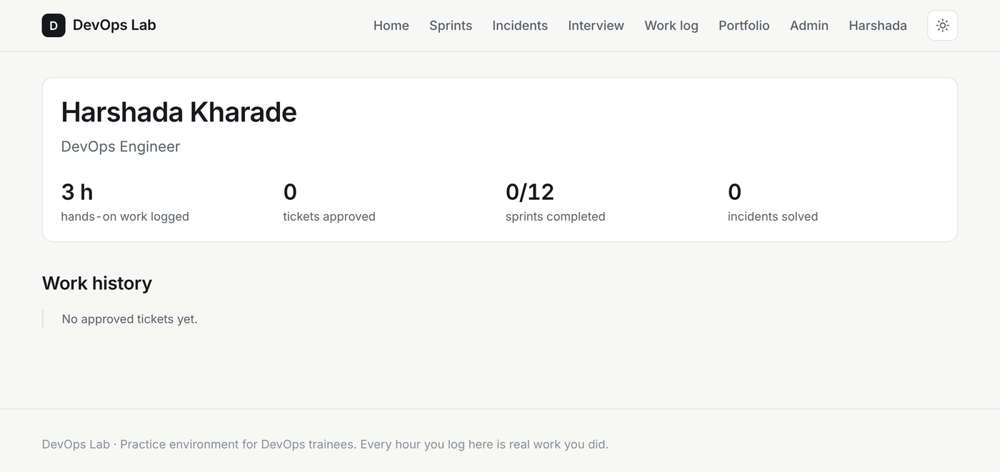
Portfolio tumhara public page hai. Sirf approved kaam dikhta hai. Ye link resume aur LinkedIn pe daalo.
Click your name in the top menu. Here you can set your city, target role, GitHub and LinkedIn links and a short bio (2-3 simple English sentences; it shows on your portfolio).
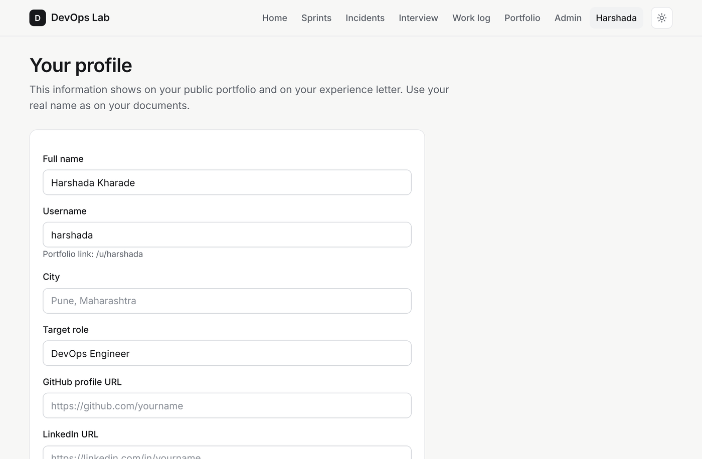
Profile me GitHub, LinkedIn aur bio daalo. Kuch sprints ke baad Hindi lines band kar do, English akele padhne ki aadat banao.
The experience letter at the end states exactly what the log shows: first and last day, hours, sprints, approved tickets and incidents. Employers verify experience letters. A letter that is not true ends your offer, so the record must be real.
Sach hours, apne shabd, apna repo, paisa kharch nahi, solution pehle nahi, English me likho. Experience letter me wahi aayega jo log me hai.
| When | What |
|---|---|
| Every working day | Open Home. Work 2-4 hours on your open ticket. Log the hours when you stop. |
| Every ticket | Tick "Done means", write "Explain it" until score 7+, read the 3 interview answers aloud, submit proof. |
| Once a week | One incident drill and one mock interview. |
| Every 2 weeks | Finish the sprint. Check that every ticket is submitted. Start the next sprint. |
| When the reviewer asks for changes | Read the note, fix it the same day, submit again. |